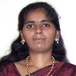

URL: http://celos.ac.in/index.php?student_ancy

Batch - 1
Centre of Excellence in Lasers and Optoelectronic Sciences,
Cochin University of Science and Technology, Cochin - 682022.
E-mail: {NOSPAM_EMAIL:ancypau@yahoo.co.in}
Ancy Paul joined CELOS in 2002 and completed her course in 2007.
She is a native of Cochin itself. Her interest areas are Fibre Optics, Optical Sensors and Spectroscopy. She wants to establish a R & D career in any of her interest fields.
For her sixth semester project she studied the "Phosphorescence decay characteristics of Calcium Sulphide and Zinc Sulphide Phosphor systems".
She was a member of organising committee for PHOTONICS 2004 and PLASMA 2005.